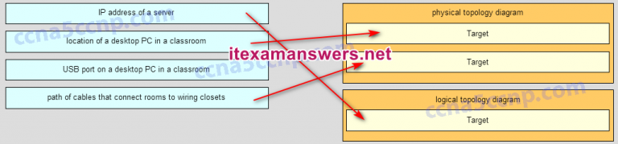

1.¿Cuál es una característica de una red tolerante a fallas?
- una red que se recupera rápidamente cuando ocurre una falla y depende de la redundancia para limitar el impacto de una falla *
- Una red que protege la información confidencial de accesos no autorizados.
- una red que puede expandirse rápidamente para admitir nuevos usuarios y aplicaciones sin afectar el rendimiento del servicio entregado a los usuarios existentes
- una red que admite un mecanismo para gestionar la congestión y garantizar la entrega confiable de contenido a todos los usuarios
- @javi__super
2.Tres empleados bancarios están utilizando la red corporativa. El primer empleado utiliza un navegador web para ver la página web de una empresa con el fin de leer algunos anuncios. El segundo empleado accede a la base de datos corporativa para realizar algunas transacciones financieras. El tercer empleado participa en una importante conferencia de audio en vivo con otros gerentes corporativos en sucursales. Si se implementa QoS en esta red, ¿cuáles serán las prioridades de mayor a menor de los diferentes tipos de datos?
- audioconferencia, transacciones financieras, página web *
- Transacciones financieras, audioconferencias, página web.
- audioconferencia, pagina web, transacciones financieras
- Transacciones financieras, página web, audioconferencia.
- @javi__super
3.¿Cuál es el beneficio de usar la computación en la nube en las redes?
- Las capacidades de red se amplían sin requerir inversiones en nueva infraestructura, personal o software. *
- Los usuarios finales tienen la libertad de utilizar herramientas personales para acceder a la información y comunicarse a través de una red empresarial.
- La tecnología se integra en los dispositivos diarios, lo que les permite interconectarse con otros dispositivos, lo que los hace más "inteligentes" o automatizados.
- ti
- @javi__super
4.¿Cuál es la función del shell en un sistema operativo?
- Interfaz entre los usuarios y el núcleo. *
- Interactúa con el hardware del dispositivo.
- Proporciona servicios de cortafuegos dedicados.
- Proporciona los servicios de protección contra intrusos para el dispositivo.
- @javi__super
5.¿Qué conexión proporciona una sesión CLI segura con cifrado a un conmutador de Cisco?
- una conexión SSH *
- una conexión de consola
- una conexión AUX
- una conexión Telnet
- @javi__super
6.Un técnico de red está intentando configurar una interfaz ingresando el siguiente comando: SanJose (config) # ip address 192.168.2.1 255.255.255.0. El comando es rechazado por el dispositivo. ¿Cuál es la razón para esto?
- El comando se ingresa desde el modo de operación incorrecto. *
- La sintaxis del comando es incorrecta.
- La información de la máscara de subred es incorrecta.
- La interfaz se apaga y debe habilitarse antes de que el conmutador acepte la dirección IP.
- @javi__super
7.Un administrador utiliza la combinación de teclas Ctrl-Shift-6 en un conmutador después de emitir el comando ping. ¿Cuál es el propósito de usar estas pulsaciones?
- para interrumpir el proceso de ping *
- para reiniciar el proceso de ping
- para salir a un modo de configuración diferente
- para permitir al usuario completar el comando
- @javi__super
8.Consulte la presentación. Un administrador de red está configurando el control de acceso para cambiar SW1. Si el administrador usa una conexión de consola para conectarse al conmutador, ¿qué contraseña se necesita para acceder al modo EXEC del usuario?
- lineconina *
- linevtyin
- secretin
- letmein
- @javi__super
9.¿En qué interfaz de conmutador un administrador configuraría una dirección IP para que el conmutador pueda administrarse de forma remota?
- VLAN 1 *
- FastEthernet0 / 1
- consola 0
- vty 0
- @javi__super
10.¿Qué protocolo es responsable de controlar el tamaño de los segmentos y la velocidad a la que se intercambian los segmentos entre un cliente web y un servidor web?
- TCP *
- IP
- HTTP
- Ethernet
- @javi__super
11.¿Qué ventaja tiene utilizar un protocolo definido por un estándar abierto?
- Fomenta la competencia y promueve opciones. *
- Una empresa puede monopolizar el mercado.
- El protocolo solo se puede ejecutar en equipos de un proveedor específico.
- Un protocolo estándar abierto no está controlado ni regulado por las organizaciones de estándares.
- @javi__super
12.¿Cuáles son los dos beneficios de usar un modelo de red en capas? (Escoge dos.)
- Ayuda en el diseño del protocolo. *
- Evita que la tecnología en una capa afecte a otras capas. *
- Asegura que un dispositivo en una capa pueda funcionar en la siguiente capa superior.
- pi
- @javi__super
13.¿Qué dos capas del modelo OSI tienen la misma funcionalidad que las dos capas del modelo TCP / IP? (Escoge dos.)
- red *
- enlace de datos
- físico
- transporte *
- @javi__super
14.¿Qué nombre se asigna a la capa de transporte PDU?
- segmento *
- pedacitos
- datos
- cuadro
- @javi__super
15.Un ingeniero de redes está midiendo la transferencia de bits a través de la red troncal de la empresa para una aplicación de base de datos de misión crítica. El ingeniero nota que el rendimiento de la red parece menor que el ancho de banda esperado. ¿Qué tres factores podrían influir en las diferencias en el rendimiento? (Elige tres.)
- la cantidad de tráfico que actualmente está cruzando la red *
- el tipo de tráfico que atraviesa la red *
- la latencia que se crea por el número de dispositivos de red que los datos están cruzando *
- La confiabilidad de la infraestructura Gigabit Ethernet de la red troncal.
- @javi__super
16.Un administrador de red está resolviendo problemas de conectividad en un servidor. Al usar un comprobador, el administrador nota que las señales generadas por la NIC del servidor están distorsionadas y no son utilizables. ¿En qué capa del modelo OSI se clasifica el error?
- capa fisica *
- Capa de presentación
- capa de red
- Capa de enlace de datos
- @javi__super
17.¿Qué tipo de cable UTP se usa para conectar una PC a un puerto de switch?
- directo * *
- consola
- dese la vuelta
- cruce
- @javi__super
18.Un administrador de red está midiendo la transferencia de bits a través de la red troncal de la empresa para una aplicación financiera de misión crítica. El administrador nota que el rendimiento de la red parece inferior al ancho de banda esperado. ¿Qué tres factores podrían influir en las diferencias en el rendimiento? (Elige tres.)
- la cantidad de tráfico que actualmente está cruzando la red *
- La sofisticación del método de encapsulación aplicado a los datos.
- el tipo de tráfico que atraviesa la red *
- la latencia que se crea por el número de dispositivos de red que los datos están cruzando *
- @javi__super
19.¿Cuál es una característica del cableado UTP?
- cancelación *
- revestimiento
- inmunidad a los peligros eléctricos
- javi__super
- @javi__super
20.¿Cuáles son dos características del cable de fibra óptica? (Escoge dos.)
- It is not affected by EMI or RFI.*
- Cada par de cables está envuelto en una lámina metálica.
- Combina la técnica de cancelación, blindaje y torsión para proteger los datos.
- Por lo general, contiene 4 pares de cables de fibra óptica.
- It is more expensive than UTP cabling is.*
21.¿Cuál es una característica de la subcapa LLC?
- Coloca información en el marco permitiendo que múltiples protocolos de Capa 3 usen la misma interfaz de red y medios. *
- Proporciona el direccionamiento lógico requerido que identifica el dispositivo.
- Proporciona la delimitación de los datos según los requisitos de señalización física del medio.
- Define los procesos de software que proporcionan servicios a la capa física.
- @javi__super
22.Un equipo de red está comparando topologías físicas de WAN para conectar sitios remotos a un edificio de la sede. ¿Qué topología proporciona alta disponibilidad y conecta algunos sitios remotos, pero no todos?
- malla parcial *
- hub y habló
- punto a punto
- malla
- @javi__super
23.¿Qué método se utiliza para gestionar el acceso basado en la contención en una red inalámbrica?
- CSMA/CA *
- ¿Qué método se utiliza para gestionar el acceso basado en la contención en una red inalámbrica?
- priority ordering
- token passing
- @javi__super
24.¿Cuáles son las tres funciones principales proporcionadas por la encapsulación de datos de Capa 2? (Elige tres.)
- direccionamiento de capa de enlace de datos *
- Detección de errores a través de cálculos de CRC *
- delimitando grupos de bits en cuadros *
- ¿Cuáles son las tres funciones principales proporcionadas por la encapsulación de datos de Capa 2? (Elige tres.)
- @javi__super
25.¿Qué hará un host en una red Ethernet si recibe una trama con una dirección MAC de destino que no coincide con su propia dirección MAC?
- Se descartará el marco. *
- Reenviará el marco al siguiente host.
- Se eliminará el marco de los medios de comunicación.
- Se eliminará el marco de los medios de comunicación.
- @javi__super
26.Eliminará el marco del enlace de datos para verificar la dirección IP de destino.
- cambio rápido *
- conmutación de almacenamiento y envío
- Conmutación CRC
- conmutación libre de fragmentos *
- @javi__super
27.¿Cuáles son dos acciones realizadas por un switch de Cisco? (Escoge dos.)
- usar las direcciones MAC de origen de los marcos para crear y mantener una tabla de direcciones MAC *
- crear una tabla de enrutamiento basada en la primera dirección IP en el encabezado del marco
- utilizando la tabla de direcciones MAC para reenviar tramas a través de la dirección MAC de destino *
- examinar la dirección MAC de destino para agregar nuevas entradas a la tabla de direcciones MAC
- @javi__super
28.¿Qué método de reenvío de tramas recibe la trama completa y realiza una verificación CRC para detectar errores antes de reenviar la trama?
- conmutación de almacenamiento y envío *
- conmutación por corte
- conmutación libre de fragmentos
- cambio rápido
- @javi__super
29.Consulte la presentación. Si el host A envía un paquete IP al host B, ¿cuál será la dirección de destino en el marco cuando abandone el host A?
- BB: BB: BB: BB: BB: BB: BB *
- 2017-05-28_195511.png
- 172.168.10.99
- 172.168.10.99
- @javi__super
30.¿Qué direcciones son mapeadas por ARP?
- dirección MAC de destino a una dirección IPv4 de destino *
- dirección MAC de destino a una dirección IPv4 de destino *
- Dirección IPv4 de destino al nombre de host de destino
- Dirección MAC de destino a la dirección IPv4 de origen
- @javi__super
31.¿Qué información se agrega durante la encapsulación en OSI Layer 3?
- dirección IP de origen y destino *
- MAC de origen y destino
- protocolo de aplicación de origen y destino
- número de puerto de origen y destino
- @javi__super
32.¿Cuáles son dos servicios proporcionados por la capa de red OSI? (Escoge dos.)
- enrutando paquetes hacia el destino *
- realizando detección de errores
- encapsular PDU desde la capa de transporte *
- detección de colisiones
- @javi__super
33.Consulte la presentación. El administrador de red de una pequeña empresa de publicidad ha elegido utilizar la red 192.168.5.96/27 para el direccionamiento de LAN interno. Como se muestra en la presentación, se asigna una dirección IP estática al servidor web de la empresa. Sin embargo, el servidor web no puede acceder a internet. El administrador verifica que las estaciones de trabajo locales con direcciones IP asignadas por un servidor DHCP pueden acceder a Internet, y el servidor web puede hacer ping a las estaciones de trabajo locales. ¿Qué componente está configurado incorrectamente?
- dirección de la puerta de enlace predeterminada *
- Direccion de DNS
- Direccion de DNS
- dirección IP del host
- @javi__super
34.¿Por qué un dispositivo de Capa 3 realiza el proceso de AND en una dirección IP de destino y una máscara de subred?
- para identificar la dirección de red de la red de destino *
- ¿Por qué un dispositivo de Capa 3 realiza el proceso de AND en una dirección IP de destino y una máscara de subred?
- para identificar la dirección de host del host de destino
- para identificar marcos defectuosos
- @javi__super
35.para identificar la dirección de red de la red de destino *
- to retain contents when power is removed *
- para almacenar la tabla de enrutamiento
- para almacenar el archivo de configuración de inicio *
- para almacenar la tabla ARP
- @javi__super
36.Consulte la presentación. ¿Cuál será el resultado de ingresar a esta configuración la próxima vez que un administrador de red conecte un cable de consola al enrutador y no se hayan ingresado comandos adicionales?
- Al administrador se le presentará con el indicador R1>. *
- El administrador deberá ingresar Cisco123.
- El administrador deberá ingresar a Cisco234.
- El administrador deberá ingresar al Cisco789.
- @javi__super
37.¿Cuál es la representación decimal con puntos de la dirección IPv4 11001011.00000000.01110001.11010011?
- 203.0.113.211 *
- 192.0.2.199
- 198.51.100.201
- 209.165.201.223
- @javi__super
38.¿Cuáles son las tres características de la transmisión multicast? (Elige tres.)
- Se puede enviar un solo paquete a un grupo de hosts. *
- La dirección de origen de una transmisión de multidifusión está en el rango de 224.0.0.0 a 224.0.0.255.
- Los enrutadores pueden utilizar la transmisión de multidifusión para intercambiar información de enrutamiento. *
- Los enrutadores no reenviarán las direcciones de multidifusión en el rango de 224.0.0.0 a 224.0.0.255. *
- @javi__super
39.¿Cuáles son los tres rangos de direcciones IP que están reservadas para uso privado interno? (Elige tres.)
- 10.0.0.0/8 *
- 172.16.0.0/12 *
- 192.168.0.0/16 *
- 192.31.7.0/24
- @javi__super
40.¿Para qué sirve NAT64 en IPv6?
- Convierte los paquetes de IPv6 en paquetes de IPv4. *
- Traduce direcciones privadas IPv6 en direcciones públicas IPv6.
- Permite a las empresas utilizar direcciones locales únicas de IPv6 en la red.
- Convierte las direcciones IPv6 normales en direcciones de 64 bits que se pueden usar en Internet.
- @javi__super
41.¿Cuál es la representación más comprimida de la dirección IPv6 2001: 0000: 0000: abcd: 0000: 0000: 0000: 0001?
- 2001: 0: 0: abcd :: 1 *
- 2001: 0: abcd :: 1
- 2001 :: abcd :: 1
- 2001: 0000: abcd :: 1
- @javi__super
42.¿Qué rango de direcciones de enlace local puede asignarse a una interfaz habilitada para IPv6?
- FE80 :: / 10 *
- FEC0 :: / 10
- FDEE :: / 7
- FF00 :: / 8
- @javi__super
43.¿Qué tres direcciones son direcciones públicas válidas? (Elige tres.)
- 198.133.219.17 *
- 192.168.1.245
- 64.104.78.227 *
- 128.107.12.117 *
- @javi__super
44.Consulte la presentación. Sobre la base de la salida, ¿cuáles dos afirmaciones sobre conectividad de red son correctas? (Escoge dos.)
- Hay conectividad entre este dispositivo y el dispositivo en 192.168.100.1. *
- La conectividad entre estos dos hosts permite realizar videoconferencias.
- Hay 4 saltos b * *entre este dispositivo y el dispositivo en 192.168.100.1. *
- El tiempo de transmisión promedio entre los dos hosts es de 2 milisegundos.
- @javi__super
45.¿Qué tipo de dirección IPv6 es FE80 :: 1?
- enlace local *
- multicast
- unicast global
- bucle de retorno
- @javi__super
46.¿Cuántas direcciones de host válidas están disponibles en una subred IPv4 que está configurada con una máscara / 26?
- 62 *
- 64
- 192
- 190
- @javi__super
47.Se le ha dicho a un administrador del sitio que una red en particular en el sitio debe acomodar 126 hosts. ¿Qué máscara de subred se usaría que contenga el número requerido de bits de host?
- 255.255.255.128 *
- 255.255.255.0
- 255.255.255.224
- 255.255.255.240
- @javi__super
48.Un administrador de red desea tener la misma máscara de subred para tres subredes en un sitio pequeño. El sitio tiene las siguientes redes y números de dispositivos: Subred A: teléfonos IP: 10 direcciones Subred: B: PC: 8 direcciones Subred: C: Impresoras: 2 direcciones ¿Qué máscara de subred única sería apropiada para las tres subredes?
- 255.255.255.240 *
- 255.255.255.0
- 255.255.255.252
- 255.255.255.248
- @javi__super
49.¿Cuántos hosts son direccionables en una red que tiene una máscara de 255.255.255.248?
- 6 *
- 7
- 8
- 254
- @javi__super
50.¿Qué subred incluiría la dirección 192.168.1.96 como una dirección de host utilizable?
- 192.168.1.64/26 *
- 192.168.1.32/27
- 192.168.1.32/28
- 192.168.1.64/29
- @javi__super
51.¿Qué máscara de subred se necesita si una red IPv4 tiene 40 dispositivos que necesitan direcciones IP y el espacio de direcciones no se debe desperdiciar?
- 255.255.255.192 *
- 255.255.255.0
- 255.255.255.128
- 255.255.255.224
- @javi__super
52.¿Cuáles son las dos características compartidas por TCP y UDP? (Escoge dos.)
- tamaño de ventana predeterminado
- numeración de puertos *
- uso de la suma de comprobación *
- @javi__super
53.¿Por qué se incluyen los números de puerto en el encabezado TCP de un segmento?
- para permitir que un host receptor envíe los datos a la aplicación apropiada *
- para indicar la interfaz de enrutador correcta que debe utilizarse para reenviar un segmento
- para identificar qué puertos de switch deben recibir o reenviar el segmento
- para determinar qué protocolo de Capa 3 se debe utilizar para encapsular los datos
- @javi__super
54.Consulte la presentación. Considere la dirección IP 192.168.10.0/24 que se ha asignado a un edificio de escuela secundaria. La red más grande en este edificio tiene 100 dispositivos. Si 192.168.10.0 es el número de red para la red más grande, ¿cuál sería el número de red para la siguiente red más grande, que tiene 40 dispositivos?
- 192.168.10.128 *
- 192.168.10.192
- 192.168.10.192
- 192.168.10.240
- @javi__super
55.¿Qué afirmación es cierta sobre el enmascaramiento de subred de longitud variable?
- El tamaño de cada subred puede ser diferente, según los requisitos. *
- Cada subred es del mismo tamaño.
- Las subredes solo se pueden dividir en subredes una vez más.
- Los bits se devuelven, en lugar de prestarse, para crear subredes adicionales.
- @javi__super
56.¿En qué dos situaciones sería UDP el protocolo de transporte preferido sobre TCP? (Escoge dos.)
- cuando se necesita un mecanismo de entrega más rápido *
- cuando las aplicaciones necesitan garantizar que un paquete llega intacto, en secuencia y no duplicado
- cuando la sobrecarga de entrega no es un problema
- cuando las aplicaciones no necesitan garantizar la entrega de los datos *
- @javi__super
57.¿Qué información importante se agrega al encabezado de la capa de transporte TCP / IP para garantizar la comunicación y la conectividad con un dispositivo de red remoto?
- números de puerto de origen y destino *
- temporización y sincronización
- Direcciones físicas de origen y destino
- Direcciones de red lógica de origen y destino
- @javi__super
58.¿Cuál es el mecanismo TCP utilizado para evitar la congestión?
- ventana deslizante *
- apretón de manos de tres vías
- par de enchufes
- apretón de manos de dos vías
- @javi__super
59.¿Qué escenario describe una función proporcionada por la capa de transporte?
- Un estudiante tiene dos ventanas de navegador web abiertas para acceder a dos sitios web. La capa de transporte garantiza que la página web correcta se envíe a la ventana del navegador correcta. *
- Un estudiante está usando un teléfono VoIP en el aula para llamar a casa. El identificador único grabado en el teléfono es una dirección de capa de transporte que se usa para contactar a otro dispositivo de red en la misma red.
- Un estudiante está jugando una película corta basada en la web con sonido. La película y el sonido están codificados dentro del encabezado de la capa de transporte.
- Un trabajador corporativo está accediendo a un servidor web ubicado en una red corporativa. La capa de transporte formatea la pantalla para que la página web se muestre correctamente, independientemente del dispositivo que se utilice para ver el sitio web.
- @javi__super
60.Un usuario abre tres navegadores en la misma PC para acceder a www.cisco.com para buscar información sobre cursos de certificación. El servidor web de Cisco envía un datagrama como respuesta a la solicitud de uno de los navegadores web. ¿Qué información utiliza la pila de protocolos TCP / IP en la PC para identificar cuál de los tres navegadores web debería recibir la respuesta?
- el número de puerto de destino *
- la dirección IP de destino
- el número de puerto de origen
- la dirección IP de origen
- @javi__super
61.¿Cuáles son las dos formas en que TCP usa los números de secuencia en un segmento? (Escoge dos.)
- para identificar segmentos faltantes en el destino *
- para volver a montar los segmentos en la ubicación remota *
- para especificar el orden en que los segmentos viajan desde el origen hasta el destino
- para determinar si el paquete cambió durante el tránsito
- @javi__super
62.¿Qué dos tareas son funciones de la capa de presentación? (Escoge dos.)
- compresión *
- direccionamiento
- cifrado *
- control de sesión
- @javi__super
63.¿Qué tres afirmaciones caracterizan a UDP? (Elige tres.)
- UDP proporciona funciones básicas de capa de transporte sin conexión. *
- UDP proporciona un transporte rápido de datos orientado a la conexión en la Capa 3.
- UDP se basa en los protocolos de capa de aplicación para la detección de errores. *
- UDP es un protocolo de baja sobrecarga que no proporciona mecanismos de secuenciación o control de flujo. *
- @javi__super
64.¿Cuál es una característica clave del modelo de red peer-to-peer?
- compartir recursos sin un servidor dedicado *
- redes inalámbricas
- Redes sociales sin internet.
- impresión en red utilizando un servidor de impresión
- @javi__super
65.Un técnico puede hacer ping a la dirección IP del servidor web de una empresa remota, pero no puede hacer ping a la dirección URL del mismo servidor web. ¿Qué utilidad de software puede usar el técnico para diagnosticar el problema?
- nslookup *
- tracert
- netstat
- jjajaj
- @javi__super
66.¿Qué nombre de dominio sería un ejemplo de un dominio de nivel superior?
- .com *
- www.cisco.com
- cisco.com
- root.cisco.com
- @javi__super
67.Una PC obtiene su dirección IP de un servidor DHCP. Si la PC se retira de la red para su reparación, ¿qué sucede con la configuración de la dirección IP?
- La dirección se devuelve al grupo para su reutilización cuando caduque el contrato. *
- La configuración es permanente y nada cambia.
- La concesión de la dirección se renueva automáticamente hasta que se devuelve la PC.
- El servidor retiene la configuración cuando se devuelve la PC.
- @javi__super
68.Al planificar el crecimiento de la red, ¿en qué lugar de la red deberían realizarse las capturas de paquetes para evaluar el tráfico de la red?
- en tantos segmentos de red diferentes como sea posible *
- Solo en el borde de la red.
- entre los hosts y la puerta de enlace predeterminada
- Sólo en el segmento de red más ocupado.
- @javi__super
69.Un host inalámbrico necesita solicitar una dirección IP. ¿Qué protocolo se utilizaría para procesar la solicitud?
- DHCP *
- FTP
- HTTP
- ICMP
- @javi__super
70.¿Qué ejemplo de código malicioso se clasificaría como un caballo de Troya?
- malware que fue escrito para parecerse a un videojuego *
- malware que requiere la intervención manual del usuario para propagarse entre sistemas
- malware que se adjunta a un programa legítimo y se propaga a otros programas cuando se inicia
- malware que puede propagarse automáticamente de un sistema a otro explotando una vulnerabilidad en el objetivo
- @javi__super
71.Cuando se aplica a un enrutador, ¿qué comando ayudaría a mitigar los ataques de contraseña de fuerza bruta contra el enrutador?
- bloque de inicio de sesión para 60 intentos 5 dentro de 60 *
- exec-timeout 30
- servicio de cifrado de contraseñas
- banner motd $ Max inicios de sesión fallidos = 5 $
- @javi__super
72.Un técnico de red sospecha que una conexión de red particular entre dos switches Cisco tiene una discrepancia dúplex. ¿Qué comando usaría el técnico para ver los detalles de Capa 1 y Capa 2 de un puerto de switch?
- Mostrar interfaces *
- mostrar mac-address-table
- mostrar breve interfaz de ip
- mostrar running-config
- @javi__super
73.¿Dónde se envían por defecto los mensajes de salida de depuración de Cisco IOS?
- línea de consola *
- Servidor syslog
- memorias intermedias de memoria
- líneas vty
- @javi__super
74.Haga coincidir la descripción con el modo IOS asociado. (No se utilizan todas las opciones.)
- Pregunta
- Responder
- @javi__super


75.Consulte la presentación. Haga coincidir los paquetes con su dirección IP de destino con las interfaces existentes en el enrutador. (No se utilizan todos los objetivos).
- Pregunta
- Respuesta
- @javi__super
76.Consulte la presentación. Un administrador está probando la conectividad a un dispositivo remoto con la dirección IP 10.1.1.1. ¿Qué indica la salida de este comando?
- Un enrutador a lo largo del camino no tenía una ruta hacia el destino. *
- Un paquete de ping está siendo bloqueado por un dispositivo de seguridad a lo largo de la ruta.
- La conexión expiró mientras se esperaba una respuesta del dispositivo remoto.
- reta
- @javi__super
77.Un usuario no puede acceder al sitio web cuando escribe http://www.cisco.com en un navegador web, pero puede acceder al mismo sitio escribiendo http://72.163.4.161. ¿Cual es el problema?
- DNS *
- puerta de enlace predeterminada
- DHCP
- Pila de protocolos TCP / IP
- @javi__super
78.Una empresa está expandiendo su negocio a otros países. Todas las sucursales deben permanecer conectadas a la sede corporativa en todo momento. ¿Qué tecnología de red se requiere para soportar este requisito?
- PÁLIDO *
- LAN
- Hombre
- wlan
- @javi__super
79.Un usuario doméstico está buscando una conexión ISP que ofrezca transmisión digital de alta velocidad a través de líneas telefónicas normales. ¿Qué tipo de conexión ISP se debe utilizar?
- DSL *
- marcar
- modem celular
- aaa
- @javi__super
80.¿Cómo ayuda la calidad de servicio a una red a soportar una amplia gama de aplicaciones y servicios?
- proporcionando mecanismos para gestionar el tráfico de red congestionado *
- permitiendo una rápida recuperación de fallas en la red
- Al limitar el impacto de un fallo de red
- Al proporcionar la capacidad para que la red crezca para adaptarse a nuevos usuarios.
- @javi__super
81.¿Qué dirección IP de origen utiliza un enrutador de forma predeterminada cuando se emite el comando traceroute?
- la dirección IP de la interfaz de salida *
- La dirección IP configurada más alta en el enrutador
- La dirección IP configurada más baja en el enrutador
- una dirección IP de loopback
- @javi__super
82.Después de realizar cambios de configuración en un switch de Cisco, un administrador de red emite un comando copy running-config startup-config. ¿Cuál es el resultado de emitir este comando?
- La nueva configuración se cargará si se reinicia el interruptor. *
- La nueva configuración se almacenará en la memoria flash.
- El archivo IOS actual se reemplazará con el archivo recién configurado.
- Los cambios de configuración se eliminarán y la configuración original se restaurará.
- @javi__super
83.Consulte la presentación. Un administrador de red está configurando el control de acceso para cambiar SW1. Si el administrador ya ha iniciado sesión en una sesión de Telnet en el conmutador, ¿qué contraseña se necesita para acceder al modo EXEC privilegiado?
- secretin *
- Déjame entrar
- lineconina
- linevtyin
- @javi__super
84.Haga coincidir cada elemento con el tipo de diagrama de topología en el que se identifica normalmente. (No se utilizan todas las opciones).
- Pregunta
- Responder 
- @javi__super
85.¿Qué conexión proporciona una sesión CLI segura con cifrado a un dispositivo de red de Cisco?
- una conexión SSH *
- una conexión Telnet
- una conexión AUX
- una conexión de consola
- @javi__super
86.¿Qué función tiene presionar la tecla Tab al ingresar un comando en IOS?
- Completa el resto de una palabra parcialmente escrita en un comando. *
- Anula el comando actual y vuelve al modo de configuración.
- Sale del modo de configuración y regresa al modo EXEC del usuario.
- Mueve el cursor al principio de la siguiente línea.
- @javi__super
87.¿Qué capa es responsable de enrutar los mensajes a través de una red interna en el modelo TCP / IP?
- Internet *
- transporte
- acceso a la red
- sesión
- @javi__super
88.¿Qué declaración describe con precisión un proceso de encapsulación TCP / IP cuando una PC está enviando datos a la red?
- Los segmentos se envían desde la capa de transporte a la capa de Internet. *
- Los datos se envían desde la capa de Internet a la capa de acceso a la red.
- Los paquetes se envían desde la capa de acceso a la red a la capa de transporte.
- Los marcos se envían desde la capa de acceso a la red a la capa de Internet.
- @javi__super
89.¿Qué dirección única está incorporada en una NIC de Ethernet y se utiliza para la comunicación en una red Ethernet?
- Dirección MAC *
- Dirección del servidor
- dirección IP
- k capa
- @javi__super
90.¿Qué procedimiento se utiliza para reducir el efecto de la interferencia en los cables de cobre?
- torciendo pares de cables de circuito opuestos juntos *
- que requieren conexiones a tierra adecuadas
- Diseñar una infraestructura de cable para evitar interferencias en la interferencia
- Evitar las curvas cerradas durante la instalación.
- @javi__super
91.Durante el proceso de encapsulación, ¿qué ocurre en la capa de enlace de datos para una PC conectada a una red Ethernet?
- Se agrega la dirección física. *
- Se añade una dirección IP.
- Se añade la dirección lógica.
- Se agrega el número de puerto de proceso.
- @javi__super
92.¿Cuáles son las dos características de las direcciones MAC de Ethernet? (Escoge dos.)
- Son únicos a nivel mundial. *
- Son enrutables en internet.
- Se expresan en 12 dígitos hexadecimales. *
- Las direcciones MAC utilizan una estructura jerárquica flexible.
- @javi__super
93.Si un dispositivo recibe una trama de Ethernet de 60 bytes, ¿qué hará?
- suelta el marco *
- procesar el marco tal como es
- enviar un mensaje de error al dispositivo emisor
- agrega bytes de datos aleatorios para que tengan 64 bytes de largo y luego reenvíalos
- @javi__super
94.¿En qué dos circunstancias un interruptor desbordará una trama de cada puerto excepto el puerto en el que se recibió la trama? (Escoge dos.)
- El cuadro tiene la dirección de transmisión como la dirección de destino. *
- La dirección de destino es desconocida para el conmutador. *
- La dirección de origen en el encabezado del cuadro es la dirección de transmisión.
- La dirección de origen en el marco es una dirección de multidifusión.
- @javi__super
95.¿Qué método de conmutación tiene el nivel más bajo de latencia?
- avance rápido *
- corte a través
- almacenamiento y reenvio
- libre de fragmentos
- @javi__super
96.¿Qué dos comandos se pueden usar en un host de Windows para mostrar la tabla de enrutamiento? (Escoge dos.)
- impresión de la ruta *
- netstat -s
- netstat -r *
- mostrar ruta ip
- @javi__super
97.¿Cuáles son las dos funciones principales de un enrutador? (Escoge dos.)
- reenvío de paquetes *
- microsegmentación
- resolución de nombres de dominio
- selección de camino *
- @javi__super
98.¿Cuál es la representación binaria de 0xCA?
- 11001010 *
- 10111010
- 11010101
- aaaaa
- @javi__super
99.Como mínimo, ¿qué dirección se requiere en las interfaces habilitadas para IPv6?
- enlace local *
- local único
- sitio local
- unicast global
- @javi__super
100.¿Qué servicio proporciona direccionamiento IPv6 global dinámico a los dispositivos finales sin usar un servidor que mantiene un registro de las direcciones IPv6 disponibles?
- SLAAC *
- DHCPv6 con estado
- direccionamiento IPv6 estático
- DHCPv6 sin estado
- @javi__super
101.¿Cuál es el propósito del comando ping :: 1?
- Prueba la configuración interna de un host IPv6. *
- Prueba la capacidad de transmisión de todos los hosts en la subred.
- Prueba la conectividad de multidifusión a todos los hosts en la subred.
- Prueba la accesibilidad de la puerta de enlace predeterminada para la red.
- @javi__super
102.¿Cuántas direcciones IP utilizables están disponibles en la red 192.168.1.0/27?
- 30 *
- 256
- 254
- 62
- @javi__super
103.¿Cuál es el proceso de dividir un flujo de datos en partes más pequeñas antes de la transmisión?
- segmentación *
- encapsulamiento
- codificación
- control de flujo
- @javi__super
104.Cuando el direccionamiento de IPv4 se configura manualmente en un servidor web, ¿qué propiedad de la configuración de IPv4 identifica la parte de red y host para una dirección de IPv4?
- máscara de subred *
- Dirección del servidor DNS
- puerta de enlace predeterminada
- Dirección del servidor DHCP
- @javi__super
105.¿Qué dos roles puede asumir una computadora en una red de igual a igual en la que un archivo se comparte entre dos computadoras? (Escoge dos.)
- cliente *
- servidor *
- esclavo
- transitorio
- @javi__super
106.¿Qué dos protocolos operan en la capa más alta de la pila de protocolos TCP / IP? (Escoge dos.)
- DNS *
- Ethernet
- IP
- POPULAR *
- @javi__super
107.¿Cuál es una diferencia entre los modelos de red cliente-servidor y de igual a igual?
- Cada dispositivo en una red de igual a igual puede funcionar como un cliente o un servidor. *
- Solo en el modelo cliente-servidor pueden ocurrir transferencias de archivos.
- Una red de igual a igual transfiere datos más rápido que una transferencia utilizando una red cliente-servidor.
- Una transferencia de datos que utiliza un dispositivo que sirve en una función de cliente requiere que esté presente un servidor dedicado.
- @javi__super
108.¿Cuál es la función del mensaje HTTP GET?
- para solicitar una página HTML desde un servidor web *
- para enviar información de error desde un servidor web a un cliente web
- para recuperar el correo electrónico del cliente desde un servidor de correo electrónico utilizando el puerto TCP 110
- pico
- @javi__super
109.¿Qué modelo de red se está utilizando cuando un autor carga un documento de capítulo a un servidor de archivos de un editor de libros?
- Servidor de cliente *
- de igual a igual
- maestro-esclavo
- punto a punto
- @javi__super
110.¿Qué servicio de red resuelve la URL ingresada en una PC a la dirección IP del servidor de destino?
- DNS *
- DHCP
- FTP
- SNMP
- @javi__super
111.Un ingeniero de redes está analizando los informes de una línea de base de red realizada recientemente. ¿Qué situación representaría un posible problema de latencia?
- un aumento en los tiempos de respuesta de ping de host a host *
- un cambio en el ancho de banda de acuerdo con la salida de interfaces de show
- un tiempo de espera de siguiente salto de un traceroute
- un cambio en la cantidad de RAM según la salida de la versión del programa
- @javi__super
112.¿Qué función de firewall se usa para garantizar que los paquetes que entran en una red son respuestas legítimas a las solicitudes iniciadas desde hosts internos?
- inspección de paquetes con estado *
- Filtrado de URL
- filtrado de aplicaciones
- filtrado de paquetes
- @javi__super
113.¿Cuál es una indicación de que una computadora con Windows no recibió una dirección IPv4 de un servidor DHCP?
- La computadora recibe una dirección IP que comienza con 169.254 *
- La computadora no puede hacer ping a 127.0.0.1.
- Windows muestra un mensaje de tiempo de espera de DHCP.
- La computadora no puede hacer ping a otros dispositivos en la misma red con direcciones IP en el rango 169.254.0.0/16.
- @javi__super
114.¿Qué comando puede emitir un administrador en un enrutador Cisco para enviar mensajes de depuración a las líneas vty?
- monitor de terminal *
- consola de registro
- registro en búfer
- registro síncrono
- @javi__super
115.Rellena el espacio en blanco.
- Durante las comunicaciones de datos, un host puede necesitar enviar un solo mensaje a un grupo específico de hosts de destino simultáneamente. Este mensaje tiene la forma de un mensaje demultidifusión * .
- @javi__super
116.Una empresa mediana está investigando las opciones disponibles para conectarse a Internet. La compañía está buscando una opción de alta velocidad con acceso dedicado y simétrico. ¿Qué tipo de conexión debe elegir la empresa?
- línea arrendada *
- DSL
- marcar
- it
- @javi__super
117.¿Cuál es el propósito de tener una red convergente?
- para reducir el costo de implementación y mantenimiento de la infraestructura de comunicación *
- para proporcionar conectividad de alta velocidad a todos los dispositivos finales
- para asegurarse de que todos los tipos de paquetes de datos se tratarán por igual
- Para lograr tolerancia a fallos y alta disponibilidad de dispositivos de infraestructura de red de datos.
- @javi__super
118.¿Qué característica de una red le permite crecer rápidamente para admitir nuevos usuarios y aplicaciones sin afectar el rendimiento del servicio que se entrega a los usuarios existentes?
- escabilidad *
- confiabilidad
- calidad de servicio
- accesibilidad
- @javi__super
119.Después de que se realicen varios cambios de configuración en un enrutador, se emite el comando de configuración de inicio de configuración de copia en ejecución. ¿Dónde se almacenarán los cambios?
- NVRAM *
- RAM
- ROM
- destello
- @javi__super
120.Consulte la presentación. Desde el modo de configuración global, un administrador está intentando crear una pancarta de mensaje del día usando el comando de comando motd V ¡Acceso autorizado solamente! Los infractores serán procesados! V Cuando los usuarios inician sesión utilizando Telnet, el banner no aparece correctamente. ¿Cuál es el problema?
- El carácter delimitador aparece en el mensaje de banner. *
- El mensaje de banner es demasiado largo.
- El símbolo "!" Señala el final de un mensaje de banner.
- Los banners del mensaje del día solo aparecerán cuando un usuario inicie sesión a través del puerto de la consola.
- @javi__super
121.¿Cuáles son las tres características de un SVI? (Elige tres.)
- No está asociado con ninguna interfaz física en un switch. *
- Está diseñado como un protocolo de seguridad para proteger los puertos del switch.
- Proporciona un medio para gestionar de forma remota un conmutador. *
- Está asociado con VLAN1 por defecto. *
- @javi__super
122.Un técnico configura un interruptor con estos comandos: SwitchA (config) # interface vlan 1 SwitchA (config-if) # ip address 192.168.1.1 255.255.255.0 SwitchA (config-if) # no shutdown ¿Qué está configurando el técnico?
- SVI *
- Acceso telnet
- cifrado de contraseña
- acceso al puerto físico
- @javi__super
123.En comunicación por computadora, ¿cuál es el propósito de la codificación de mensajes?
- para convertir la información a la forma apropiada para la transmisión *
- interpretar informacion
- para romper mensajes grandes en marcos más pequeños
- para negociar el momento correcto para una comunicación exitosa
- @javi__super
124.¿Cuál es una característica de los mensajes de multidifusión?
- Se envían a un grupo selecto de hosts. *
- Deben ser reconocidos.
- Se envían a un solo destino.
- Se envían a todos los hosts en una red.
- @javi__super
125.Una gran corporación ha modificado su red para permitir a los usuarios acceder a los recursos de la red desde sus computadoras portátiles personales y teléfonos inteligentes. ¿Qué tendencia de redes describe esto?
- trae tu propio dispositivo *
- videoconferencia
- colaboración en línea
- computación en la nube
- @javi__super
126.Verdadero o falso. No se necesita un servidor dedicado cuando se implementa una red de igual a igual.
- Cierto *
- falso
- @javi__super
127.¿Qué término se refiere a una red que proporciona acceso seguro a las oficinas corporativas por parte de proveedores, clientes y colaboradores?
- extranet *
- Internet
- intranet
- extendido
- @javi__super
128.¿Qué máscara de subred se requiere para admitir 512 subredes en redes 172.28.0.0/16?
- 255.255.255.128 *
- 255.255.240.0
- 255.255.255.224
- 255.255.255.240
- @javi__super
129.Un servidor DHCP se usa para direccionar direcciones IP dinámicamente a los hosts en una red. El conjunto de direcciones se configura con 10.29.244.0/25. Hay 19 impresoras en esta red que necesitan usar direcciones IP estáticas de reserva del grupo. ¿Cuántas direcciones IP en el grupo quedan para ser asignadas a otros hosts?
- 107 *
- 210
- 06
- 146
- @javi__super